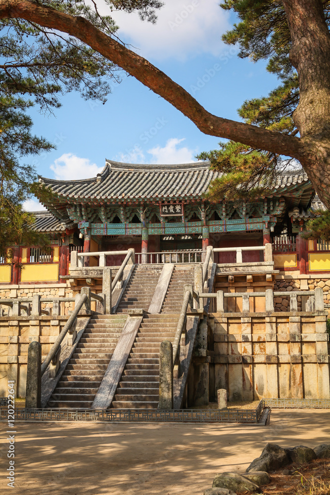

경주
경주는 천년 고도 신라의 수도로 도시 전체가 하나의 박물관이라 불릴만큼 풍부한 역사 유산을 간직한 곳입니다 불국사와 석굴암은 유네스코 세계 문화유산으로 지정되어 있으며 청성대,대릉원 등 고대 신라의 문명을 직접 느낄 수 있는 명소로 가득합니다.
지역 이미지

경주는 천년 고도 신라의 수도로 도시 전체가 하나의 박물관이라 불릴만큼 풍부한 역사 유산을 간직한 곳입니다 불국사와 석굴암은 유네스코 세계 문화유산으로 지정되어 있으며 청성대,대릉원 등 고대 신라의 문명을 직접 느낄 수 있는 명소로 가득합니다.
